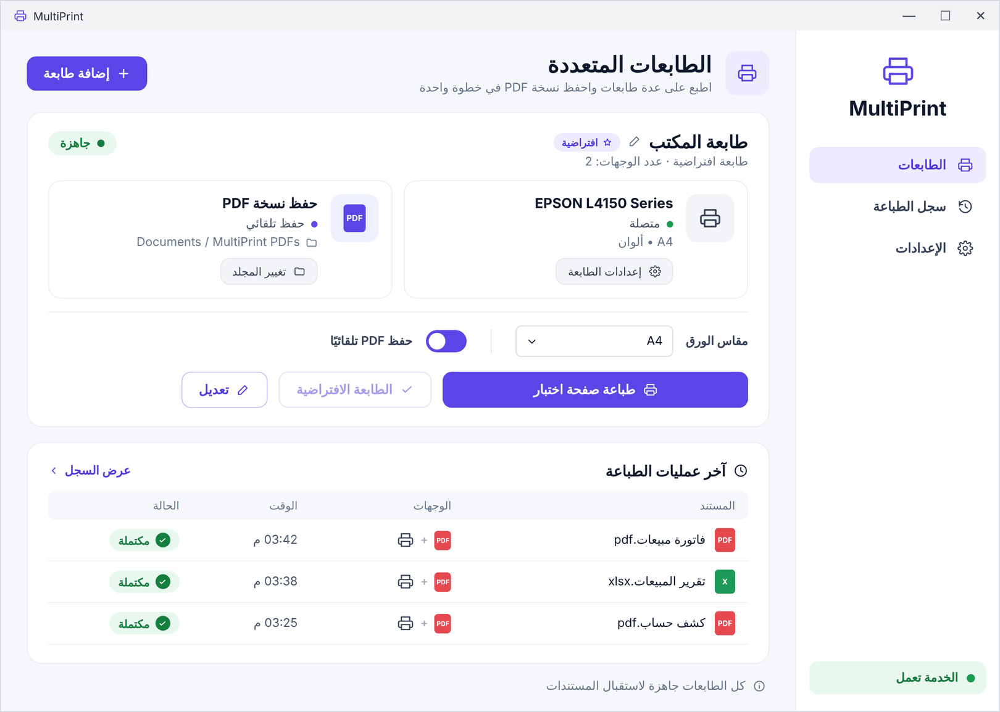

كيف تطبع على طابعتين في الوقت نفسه في Windows
يرسل Windows كل أمر طباعة إلى طابعة واحدة فقط. يشرح هذا الدليل كيفية طباعة المستند نفسه على طابعتين أو أكثر في آنٍ واحد، مع الاحتفاظ بنسخة PDF تلقائيًا، في دقيقة تقريبًا.
لماذا لا يتيح Windows ذلك افتراضيًا؟
عند الضغط على «طباعة» يرسل Windows المستند إلى طابعة واحدة فقط، ولا يوجد إعداد مدمج لتكراره على طابعة أخرى.
يُقترح كثيرًا استخدام ميزة «Printer Pooling» من خصائص الطابعة، لكنها توزّع المهام على أول طابعة متاحة، فيُطبع المستند مرة واحدة لا على جميع الطابعات.
إعادة الطباعة يدويًا مرتين حلٌّ بطيء ومعرّض للنسيان، خاصة في الفواتير التي تحتاج إلى نسخة ورقية ونسخة PDF للأرشيف.
الطباعة على عدة طابعات باستخدام DualPrint
نزّل DualPrint
نزّل البرنامج المجاني لنظام Windows 10 أو 11، وفكّ الضغط وشغّل DualPrint.exe، ووافق على طلب صلاحيات المسؤول مرة واحدة.
أضف طابعة متعددة
اختر «إضافة طابعة» وأدخل اسمًا لها، مثل «الفواتير».
اختر الطابعات
حدّد طابعتين أو أكثر، وأضف «Microsoft Print to PDF» إذا أردت نسخة PDF أيضًا.
حدّد مجلد PDF
عند اختيار PDF، حدّد المجلد وبداية اسم الملف (اختياريًا)، وستُحفظ الملفات فيه تلقائيًا.
اطبع من أي تطبيق
من Word أو Excel أو المتصفح أو النظام المحاسبي، اختر الطابعة الجديدة باسمها ثم اطبع.
راجع سجل الطباعة
يظهر كل مستند في سجل الطباعة مع وجهاته ونتيجة كلٍّ منها.

الطباعة والحفظ بصيغة PDF في الوقت نفسه
اختر طابعة فعلية مع «Microsoft Print to PDF»، فتحصل على النسخة الورقية وعلى ملف PDF باسم مثل فاتورة_2026-11-02_15-45-00.pdf في المجلد المحدد، دون نافذة «حفظ باسم».
الأسئلة الشائعة
هل يمكن الطباعة على طابعتين في Windows دون برامج إضافية؟
لا. يرسل Windows أمر الطباعة إلى طابعة واحدة، وميزة Printer Pooling توزّع المهام فقط ولا تطبع على جميع الطابعات.
هل يعمل مع طابعات الشبكة وطابعات USB؟
نعم، يمكن استخدام أي طابعة مثبتة في Windows، بما فيها طابعات الشبكة وUSB وطابعات الإيصالات.
هل يمكن تحديد مقاس الورق؟
لكل طابعة متعددة إعداد لمقاس الورق (A4 أو A3 أو A5 أو Letter أو Legal أو تلقائي)، وتُستخدم الإعدادات الافتراضية لكل طابعة فيما عدا ذلك.
هل البرنامج مجاني؟
نعم، DualPrint مجاني ومفتوح المصدر بموجب ترخيص MIT.